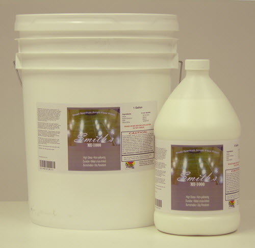

Smith’s Smith’s ME-1000 is a "broad-spectrum", non-yellowing, acrylic polymer-based liquid floor polish for decorative concrete. The product is easy to apply and dries clear. Smith’s ME-1000 was developed to increase longevity and durability of sealed Smith’s Decorative Concrete Products (Smith’s Color Floor and Color Accents). Smith’s ME-1000 utilizes quality polymers for increase gloss retention as well as improved abrasion and heel mark resistance resulting in a premium protection system. This polish can be applied to residential and commercial interior applications. Smith’s ME-1000 can also be utilized as a maintenance coat for a variety of substrates including, but not limited to sealed concrete, polished concrete, sheet vinyl, vinyl composition tile (VCT), and linoleum.
Highlights
